일반기계기사 (2022-03-05 기출문제)
1과목: 재료역학
1. 양단이 회전지지로 된 장주에서 거리 e 만큼 편심된 곳에 축방향 하중 P가 작용할 때 이 기둥에서 발생하는 최대 압축응력(σmax)은? (단, A는 기둥 단면적, 2c는 두께, r은 단면의 회전반경, E는 세로탄성계수이다.)
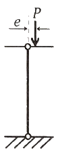
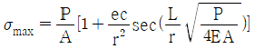
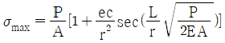
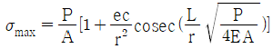
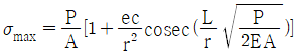
(정답률: 33%)

2. 그림과 같은 막대가 있다. 길이는 4m 이고 힘(F)은 지면에 평행하게 200N만큼 주었을 때 O점에 작용하는 힘(Fox, Foy)과 모멘트(Mz)의 크기는?
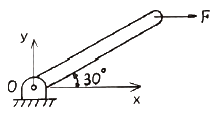
- Fox = 200N, Foy = 0, Mz = 400 N·m
- Fox = 0, Foy = 200N, Mz = 200 N·m
- Fox = 200N, Foy = 200N, Mz = 200 N·m
- Fox = 0, Foy = 0, Mz = 400 N·m
(정답률: 80%)
3. 지름 100mm의 원에 내접하는 정사각형 단면을 가진 강봉이 10kN의 인장력을 받고 있다. 단면에 작용하는 인장응력은 약 몇 MPa 인가?
- 2
- 3.1
- 4
- 6.3
(정답률: 72%)
4. 도심축에 대한 단면 2차 모멘트가 크도록 직사각형 단면[폭(b)×높이(h)]을 만들 때 단면 2차 모멘트를 직사각형 폭(b)에 관한 식으로 옳게 나타낸 것은? (단, 직사각형 단면은 지름 d인 원에 내접한다.)
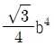
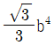
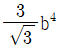
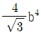
(정답률: 33%)
5. 기계요소의 임의의 점에 대하여 스트레인을 측정하여 보니 다음과 같이 나타났다. 현 위치로부터 시계방향으로 30° 회전된 좌표계의 y방향의 스트레인 εy는 얼마인가? (단, ε은 각 방향별 수직변형률, γ는 전단변형률을 나타낸다.)
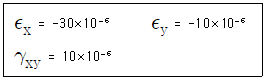
- -14.95×10-6
- -12.64×10-6
- -10.67×10-6
- -9.32×10-6
(정답률: 29%)
6. 길이 15m, 지름 10mm의 강봉에 8kN의 인장하중을 걸었떠니 탄성 변형이 생겼다. 이 때 늘어난 길이는 약 몇 mm 인가? (단, 이 강재의 세로탄성계수는 210GPa 이다.)
- 1.46
- 14.6
- 0.73
- 7.3
(정답률: 72%)
7. 그림과 같이 2개의 비틀림 모멘트를 받고 있는 중공축의 a-a 단면에서 비틀림 모멘트에 의한 최대전단응력은 약 몇 MPa 인가? (단, 중공축의 바깥지름은 10cm, 안지름은 6cm 이다.)
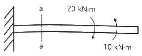
- 25.5
- 36.5
- 47.5
- 58.5
(정답률: 66%)
8. 그림과 같은 보에서 P1 = 800N, P2 = 500N이 작용할 때 보의 왼쪽에서 2m 지점에 있는 a 위치에서의 굽힘모멘트의 크기는 약 몇 N·m 인가?
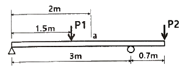
- 133.3
- 166.7
- 204.6
- 257.4
(정답률: 63%)
9. 5cm×10cm 단면의 3개의 목재를 목재용 접착제로 접착하여 그림과 같은 10cm×15cm 의 사각 단면을 갖는 합성 보를 만들었다. 접착부에 발생하는 전단응력은 약 몇 kPa 인가? (단, 이 합성보는 양단이 길이 2m인 단순지지보이며 보의 중앙에 800N의 집중하중을 받는다.)
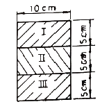
- 57.6
- 35.5
- 82.4
- 160.8
(정답률: 25%)
10. 외팔보 AB에서 중앙(C)에 모멘트 MC와 자유단에 하중 P가 동시에 작용할 때, 자유단(B)에서의 처짐량이 영(0)이 되도록 MC를 결정하면? (단, 굽힘강성 EI는 일정하다.)
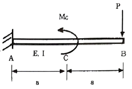
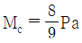
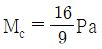
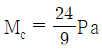
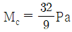
(정답률: 49%)
11. 그림과 같은 외팔보가 있다. 보의 굽힘에 대한 허용응력을 80MPa로 하고, 자유단 B로부터 보의 중앙점 C사이에 등분포하중 w를 작용시킬 때, w의 최대 허용값은 몇 kN/m인가? (단, 외팔보의 폭×높이는 5cm×9cm 이다.)
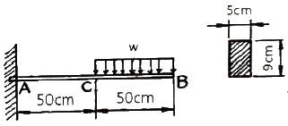
- 12.4
- 13.4
- 14.4
- 15.4
(정답률: 65%)
12. 지름 20cm, 길이 40cm 인 콘크리트 원통에 압축하중 20kN이 작용하여 지름이 0.0006cm 만큼 늘어나고 길이는 0.0⑤7cm 만큼 줄었을 때, 푸아송 비는 약 얼마인가?
- 0.18
- 0.24
- 0.21
- 0.27
(정답률: 72%)
13. 그림과 같이 지름 50mm의 연강봉의 일단을 벽에 고정하고, 자유단에는 50cm 길이의 레버 끝에 600N의 하중을 작용시킬 때 연강봉에 발생하는 최대굽힘응력과 최대전단응력은 각각 몇 MPa 인가?
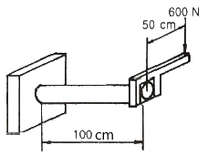
- 최대굽힘응력 : 51.8, 최대전단응력 : 27.3
- 최대굽힘응력 : 27.3, 최대전단응력 : 51.8
- 최대굽힘응력 : 41.8, 최대전단응력 : 27.3
- 최대굽힘응력 : 27.3, 최대전단응력 : 41.8
(정답률: 36%)
14. 그림과 같은 직육면체 블록은 전단탄성계수 500MPa이고, 상하면에 강체 평판이 부착되어 있다. 아래쪽 평판은 바닥면에 고정되어 있으며, 위쪽 평판은 수평방향 힘 P가 작용한다. 힘 P에 의해서 위쪽 평판이 수평방향으로 0.8mm 이동되었다면 가해진 힘 P는 약 몇 kN 인가?
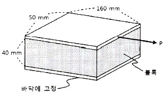
- 60
- 80
- 100
- 120
(정답률: 44%)
15. 바깥지름 80mm, 안지름 60mm인 중공축에 4kN·m의 토크가 작용하고 있다. 최대 전단변형률은 얼마인가? (단, 축 재료의 전단탄성계수는 27GPa 이다.)
- 0.00122
- 0.00216
- 0.00324
- 0.00410
(정답률: 65%)
16. 그림과 같은 전체 길이가 ℓ인 보의 중앙에 집중하중 P[N]와 균일분포 하중 w[N/m]가 동시에 작용하는 단순보에서 최대 처짐은? (단, w×ℓ=P 이고, 보의 굽힘강성 EI는 일정하다.)
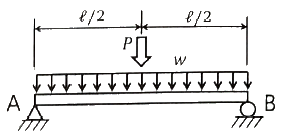
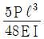
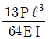
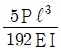
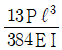
(정답률: 68%)
17. 그림과 같이 10kN의 집중하중과 4kN·m의 굽힘모멘트가 작용하는 단순지지보에서 A 이치의 반력 RA는 약 몇 kN 인가? (단, 4kN·m의 모멘트는 보의 중앙에서 작용한다.)
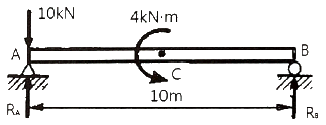
- 6.8
- 14.2
- 8.6
- 10.4
(정답률: 73%)
18. 그림의 구조물이 수직하중 2P를 받을 때 구조물 속에 저장되는 총 탄성변형에너지는? (단, 구조물의 단면적은 A, 세로탄성계수는 E로 모두 같다.)
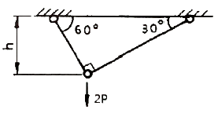
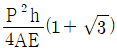
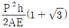
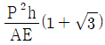
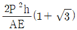
(정답률: 30%)
19. 그림과 같이 ω N/m의 분포하중을 받는 길이 L의 양단 고정보에서 굽힘 모멘트가 0이 되는 곳은 보의 왼쪽으로부터 대략 어디에 위치해 있는가?
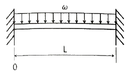
- 0.5 L
- 0.33 L, 0.67 L
- 0.21 L, 0.79 L
- 0.26 L, 0.74 L
(정답률: 34%)
20. 한 변이 50cm이고, 얇은 두께를 가진 정사각형 파이프가 20000 N·m의 비틀림 모멘트를 받을 때 파이프 두께는 약 몇 mm 이상으로 해야 하는가? (단, 파이프 재료의 허용비틀림응력은 40MPa 이다.)
- 0.5 mm
- 1.0 mm
- 1.5 mm
- 2.0 mm
(정답률: 28%)
2과목: 기계열역학
21. Van der Waals 상태 방정식은 다음과 같이 나타낸다. 이 식에서 a/v2, b는 각각 무엇을 의미하는 것인가? (단, P는 압력, v는 비체적, R은 기체상수, T는 온도를 나타낸다.)
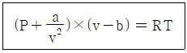
- 분자간의 작용력, 분자 내부 에너지
- 분자 자체의 질량, 분자 내부 에너지
- 분자간의 작용력, 기체 분자들이 차지하는 체적
- 분자 자체의 질량, 기체 분자들이 차지하는 체적
(정답률: 64%)
22. 1 MPa, 230℃ 상태에서 압축계수(compressibility factor)가 0.95인 기체가 있다. 이 기체의 실제 비체적은 약 몇 m3/kg인가? (단, 이 기체의 기체상수는 461 J/(lg·K) 이다.)
- 0.14
- 0.18
- 0.22
- 0.26
(정답률: 62%)
23. 효율이 40%인 열기관에서 유효하게 발생되는 동력이 110kW 라면 주위로 방출되는 총 열량은 약 몇 kW 인가?
- 375
- 165
- 135
- 85
(정답률: 59%)
24. 피스톤-실린더에 기체가 존재하며 피스톤의 단면적은 5cm2이고 피스톤에 외부에서 500N의 힘이 가해진다. 이 때 주변 대기압력이 0.099 MPa이면 실린더 내부 기체의 절대압력(MPa)은 약 얼마인가?
- 0.901
- 1.099
- 1.135
- 1.275
(정답률: 69%)
25. 랭킨 사이클로 작동되는 증기동력 발전소에서 20MPa의 압력으로 물이 보일러에 공급되고, 응축기 출구에서 온도는 20℃, 압력은 2.339 kPa이다. 이 때 급수펌프에서 수행하는 단위질량당 일은 약 몇 kJ/kg인가? (단, 20℃에서 포화액 비체적은 0.001002 m3kg, 포화증기 비체적은 57.79 m3/kg이며, 급수펌프에서는 등엔트로피 과정으로 변화한다고 가정한다.)
- 0.4681
- 20.04
- 27.14
- 1020.6
(정답률: 21%)
26. 비열이 0.9 kJ/(kg·K), 질량이 0.7kg으로 동일하며, 온도가 각각 200℃와 100℃인 두 금속 덩어리를 접촉시켜서 온도가 평형에 도달하였을 때 총 엔트로피 변화량은 약 몇 J/K 인가?
- 8.86
- 10.42
- 13.25
- 16.87
(정답률: 29%)
27. 그림과 같은 이상적인 열펌프의 압력(P)-엔탈피(h) 선도에서 각 상태의 엔탈피는 다음과 같을 때 열펌프의 성능계수는? (단, h1 = 155 kJ/kg, h3 = 593 kJ/kg, h4= 827 kJ/kg 이다.)
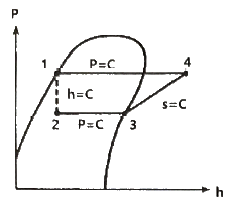
- 1.8
- 2.9
- 3.5
- 4.0
(정답률: 54%)
28. 이상기체의 상태변화에서 내부에너지가 일정한 상태 변화는?
- 등온 변화
- 정압 변화
- 단열 변화
- 정적 변화
(정답률: 42%)
29. 압력이 일정할 때 공기 5kg을 0℃에서 100℃까지 가열하는데 필요한 열량은 약 몇 kJ 인가? (단, 비열(Cp)은 온도 T(℃)에 관계한 함수로 Cp(kJ/(kg·℃)) = 1.01+0.000079×T 이다.)
- 365
- 436
- 480
- 507
(정답률: 61%)
30. 고온 400℃, 저온 50℃의 온도 범위에서 작동하는 Carnot 사이클 열기관의 효율을 구하면 약 몇 % 인가?
- 43
- 46
- 49
- 52
(정답률: 64%)
31. 기관의 실린더 내에서 1kg의 공기가 온도 120℃에서 열량 40kJ를 얻어 등온팽창 한다고 하면 엔트로피의 변화는 얼마인가?
- 0.102 kJ/(kg·K)
- 0.132 kJ/(kg·K)
- 0.162 kJ/(kg·K)
- 0.192 kJ/(kg·K)
(정답률: 62%)
32. 물질의 양을 1/2로 줄이면 강도성(강성적) 상태량(intensive properties)은 어떻게 되는가?
- 1/2로 줄어든다.
- 1/4로 줄어든다.
- 변화가 없다.
- 2배로 늘어난다.
(정답률: 65%)
33. 수평으로 놓여진 노즐에서 증기가 흐르고 있다. 입구에서의 엔탈피는 3106 kJ/kg이고, 입구 속도는 13m/s, 출구 속도는 300m/s일 때 출구에서의 증기 엔탈피는 약 몇 kJ/kg인가? (단, 노즐에서의 열교환 및 외부로의 일량은 무시할 수 있을 정도로 작다고 가정한다.)
- 3146
- 3208
- 2963
- 3061
(정답률: 47%)
34. 단열 노즐에서 공기가 팽창한다. 노즐입구에서 공기 속도는 60m/s, 온도는 200℃이며, 출구에서 온도는 50℃일 때 출구에서 공기 속도는 약 얼마인가? (단, 공기 비열은 1.0035 kJ/(kg·K)이다.)
- 62.5 m/s
- 328 m/s
- 552 m/s
- 1901 m/s
(정답률: 41%)
35. 물 10kg을 1기압 하에서 20℃로부터 60℃까지 가열할 때 엔트로피의 증가량은 약 몇 kJ/K인가? (단, 물의 정압비열은 4.18 kJ/(kg·K) 이다.)
- 9.78
- 5.35
- 8.32
- 14.8
(정답률: 64%)
36. 질량이 4kg인 단열된 강재 용기 속에 물 18L가 들어있으며, 25℃로 평형상태에 있다. 이 속에 200℃의 물체 8kg을 넣었더니 열평형에 도달하여 온도가 30℃가 되었다. 물의 비열은 4.187 kJ/(kg·K)이고, 강재(용기)의 비열은 0.4648 kJ/(kg·K) 일 때, 물체의 비열은 약 몇 kJ/(kg·K) 인가? (단, 외부와의 열교환은 없다고 가정한다.)
- 0.244
- 0.267
- 0.284
- 0.302
(정답률: 52%)
37. 다음의 물리량 중 물질의 최초, 최종상태 뿐 아니라 상태변화의 경로에 따라서도 그 변화량이 달라지는 것은?
- 일
- 내부에너지
- 엔탈피
- 엔트로피
(정답률: 62%)
38. 압력이 0.2MPa 이고, 초기 온도가 120℃인 1kg의 공기를 압축비 18로 가역 단열 압축하는 경우 최종온도는 약 몇 ℃ 인가? (단, 공기의 비열비가 1.4인 이상기체이다.)
- 676℃
- 776℃
- 876℃
- 976℃
(정답률: 54%)
39. 공기 표준 사이클로 운전하는 이상적인 디젤사이클이 있다. 압축비는 17.5, 비열비는 1.4, 체절비(또는 분사단절비, cut-off ratio)는 2.1일 때 이 디젤 사이클의 효율은 약 몇 % 인가?
- 60.5
- 62.3
- 64.7
- 66.8
(정답률: 20%)
40. 고열원 500℃와 저열원 35℃ 사이에 열기관을 설치하였을 때, 사이클당 10MJ의 공급열량에 대해서 7MJ의 일을 하였다고 주장한다면, 이 주장은?
- 열역학적으로 타당한 주장이다.
- 가역기관이라면 타당한 주장이다.
- 비가역기관이라면 타당한 주장이다.
- 열역학적으로 타당하지 않은 주장이다.
(정답률: 55%)
3과목: 기계유체역학
41. 반지름 0.5m인 원통형 탱크에 1.5m 높이로 물을 채우고 중심축을 기준으로 각속도 10rad/s 로 회전시킬 때 탱크 저면의 중심에서 압력은 계기압력으로 약 몇 kPa 인가? (단, 탱크의 윗면은 열려 대기 중에 노출되어 있으며 물은 넘치지 않는다고 한다.)
- 2.26
- 4.22
- 6.42
- 8.46
(정답률: 19%)
42. 경계층(boundary layer)에 관한 설명 중 틀린 것은?
- 경계층 바깥의 흐름은 포텐셜 흐름에 가깝다.
- 균일 속도가 크고, 유체의 점성이 클수록 경계층의 두께는 얇아진다.
- 경계층 내에서는 점성의 영향이 크다.
- 경계층은 평판 선단으로부터 하류로 갈수록 두꺼워진다.
(정답률: 61%)
43. 정지 유체 속에 잠겨 있는 평면에 대하여 유체에 의해 받는 힘에 관한 설명 중 틀린 것은?
- 깊게 잠길수록 받는 힘이 커진다.
- 크기는 도심에서의 압력에 전체 면적을 곱한 것과 같다.
- 평면이 수평으로 놓인 경우, 압력중심은 도심과 일치한다.
- 평면이 수직으로 놓인 경우, 압력중심은 도심보다 약간 위쪽에 있다.
(정답률: 62%)
44. 실형의 1/25인 기하하적으로 상사한 모형 댐을 이용하여 유동특성을 연구하려고 한다. 모형 댐의 상부에서 유속이 1m/s 일 때 실제 댐에서 해당 부분의 유속은 약 몇 m/s 인가?
- 0.025
- 0.2
- 5
- 25
(정답률: 46%)
45. (r, θ)좌표계에서 코너를 흐르는 비점성, 비압축성 유체의 2차원 유동함수(
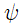
, m2/s)는 아래와 같다. 이 유동함수에 대한 속도 포텐셜(ø)의 식으로 옳은 것은? (단, r은 m 단위이고, C는 상수이다.)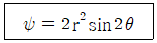
- ø = 2r2 cos2θ + C
- ø = 2r2 tan2θ + C
- ø = 4r cosθ2 + C
- ø = 4r tanθ2 + C
(정답률: 37%)
46. 두 평판 사이에 점성계수가 2 N·s/m2인 뉴턴 유체가 다음과 같은 속도분포 (u, m/s)로 유동한다. 여기서 y는 두 평판 사이의 중심으로부터 수직방향 거리(m)를 나타낸다. 평판 중심으로부터 y = 0.5cm 위치에서의 전단응력의 크기는 약 몇 N/m2 인가?
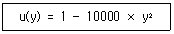
- 100
- 200
- 1000
- 2000
(정답률: 45%)
47. 개방된 탱크 내에 비중이 0.8인 오일이 가득 차 있다. 대기압이 101 kPa 라면, 오일 탱크 수면으로부터 3m 깊이에서 절대압력은 약 몇 kPa 인가?
- 208
- 249
- 174
- 125
(정답률: 66%)
48. 피토-정압관과 액주계를 이용하여 공기의 속도를 측정하였다. 비중이 약 1인 액주계 유체의 높이 차이는 10mm이고, 공기 밀도는 1.22 kg/m3일 때, 공기의 속도는 약 몇 m/s 인가?
- 2.1
- 12.7
- 68.4
- 160.2
(정답률: 47%)
49. 축동력이 10kW인 펌프를 이용하여 호수에서 30m 위에 위치한 저수지에 25L/s의 유량으로 물을 양수한다. 펌프에서 저수지까지 파이프 시스템의 비가역적 수두손실이 4m라면 펌프의 효율은 약 몇 % 인가?
- 63.7
- 78.5
- 83.3
- 88.7
(정답률: 40%)
50. 밀도 890 kg/m3, 점성계수 2.3 kg/(m·s)인 오일이 지름 40cm, 길이 100m인 수평 원관 내를 평균속도 0.5 m/s로 흐른다. 입구의 영향을 무시하고 압력강하를 이길 수 있는 펌프 소요동력은 약 몇 kW 인가?
- 0.58
- 1.45
- 2.90
- 3.63
(정답률: 34%)
51. 그림과 같은 반지름 R인 원관 내의 층류유동 속도분포는
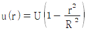
으로 나타내어진다. 여기서 원관 내 전체가 아닌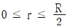
인 원형 단면을 흐르는 체적유량 Q를 구하면? (단, U는 상수이다.)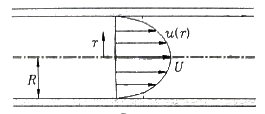
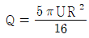
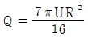
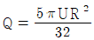
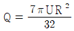
(정답률: 19%)
52. 유체의 회전벡터(각속도)가 ω인 회전유동에서 와도(vorticity, )는?
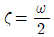
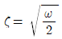
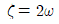
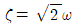
(정답률: 36%)
53. 날개 길이(span) 10m, 날개 시위(chord length)는 1.8m인 비행기가 112 m/s의 속도로 날고 있다. 이 비행기의 항력계수가 0.0761 일 때 비행에 필요한 동력은 약 몇 kW 인가? (단, 공기의 밀도는 1.2173 kg/m3, 날개는 사각형으로 단순화하며, 양력은 충분히 발생한다고 가정한다.)
- 1172
- 1343
- 1570
- 3733
(정답률: 51%)
54. 점성계수가 0.7 poise 이고 비중이 0.7인 유체의 동점성계수는 몇 stokes 인가?
- 0.1
- 1.0
- 10
- 100
(정답률: 41%)
55. 그림과 같이 평판의 왼쪽 면에 단면적이 0.01 m2, 속도 10m/s인 물 제트가 직각으로 충돌하고 있다. 평판의 오른쪽 면에 단면적이 0.04 m2인 물 제트를 쏘아 평판이 정지 상태를 유지하려면 속도 V2 는 약 몇 m/s 여야 하는가?
- 2.5
- 5.0
- 20
- 40
(정답률: 41%)
56. 그림과 같이 탱크로부터 15℃의 공기가 수평한 호스와 노즐을 통해 Q의 유량으로 대기 중으로 흘러나가고 있다. 탱크 안의 게이지압력이 10kPa일 때, 유량 Q는 약 몇 m3/s 인가? (단, 노즐 끝단의 지름은 0.02m, 대기압은 101 kPa 이고, 공기의 기체상수는 287 J/(kg·K)이다.)
- 0.038
- 0.042
- 0.046
- 0.⑤4
(정답률: 11%)
57. 그림과 같은 노즐에서 나오는 유량이 0.078 m3/s 일 때 수위(H)는 약 얼마인가? (단, 노즐 출구의 안지름은 0.1m 이다.)
- 5m
- 10m
- 0.5m
- 1m
(정답률: 53%)
58. 원형 관내를 완전한 층류로 물이 흐를 경우 관마찰계수(f)에 대한 설명으로 옳은 것은?
- 상대 조도(ε/D)만의 함수이다.
- 마하수(Ma)만의 함수이다.
- 오일러수(Eu)만의 함수이다.
- 레이놀즈수(Re)만의 함수이다.
(정답률: 66%)
59. 어느 물리법칙이 F(a, V, ν, L) = 0과 같은 식으로 주어졌다. 이 식을 무차원수의 함수로 표시하고자 할 때 이에 관계되는 무차원수는 몇 개인가? (단, a, V, ν, L은 각각 rkthe고, 속도, 동점성계수, 길이이다.)
- 4
- 3
- 2
- 1
(정답률: 50%)
60. 밀도가 800 kg/m3인 원통형 물체가 그림과 같이 1/3이 액체면 위에 떠있는 것으로 관측되었다. 이 액체의 비중은 약 얼마인가?
- 0.2
- 0.67
- 1.2
- 1.5
(정답률: 38%)
4과목: 기계재료 및 유압기기
61. 주강품에 대한 설명 중 틀린 것은?
- 용접에 의한 보수가 용이하다.
- 주조 후에는 일반적으로 풀림을 실시하여 주조 응력을 제거한다.
- 주조 방법에 의하여 용강을 주형에 주입하여 만든 강제품을 주강품이라 한다.
- 중탄소 주강은 탄소의 함유량이 약 0.1~0.15%C 범위이다.
(정답률: 49%)
62. 다음 중 항온열처리 방법이 아닌 것은?
- 질화법
- 마퀜칭
- 마템퍼링
- 오스템퍼링
(정답률: 67%)
63. 0.8% 탄소를 고용한 탄소강을 800℃로 가열하였다가 서서히 냉각시켰을 때 나타나는 조직은?
- 펄라이트(pearlite)
- 오스테나이트(austenite)
- 시멘타이트(cementite)
- 레데뷰라이트(ledeburite)
(정답률: 39%)
64. 5~20%Zn의 황동을 말하며, 강도는 낮으나 전연성이 좋고 금색에 가까우므로 모조금이나 판 및 선 등에 사용되는 것은?
- 톰백
- 문쯔메탈
- Y-합금
- 네이벌 황동
(정답률: 57%)
65. 피삭성을 향상시키기 위해 쾌삭강에 첨가하는 원소가 아닌 것은?
- Te
- Pb
- Sn
- Bi
(정답률: 29%)
66. 체심입방격자에 해당하는 귀속 원자수는?
- 1개
- 2개
- 3개
- 4개
(정답률: 62%)
67. Fe-C 평형상태도에서 [δ고용체] + (L(융액)) ⇆ [γ고용체]가 일어나는 온도는 약 몇 ℃ 인가?
- 768℃
- 910℃
- 1130℃
- 1490℃
(정답률: 41%)
68. 전자강판(규소강판)에 요구되는 특성을 설명한 것 중 틀린 것은?
- 투자율이 높아야 한다.
- 포화자속밀도가 높아야 한다.
- 자화에 의한 치수의 변화가 적어야 한다.
- 박판을 적층하여 사용할 때 층간저항이 낮아야 한다.
(정답률: 36%)
69. 로그웰경도시험(HRA~HRH, HRK)에 사용되는 총 시험하중에 해당되지 않는 것은?
- 588.4N(60kgf)
- 980.7N(100kgf)
- 1471N(150kgf)
- 1961.3N(200kgf)
(정답률: 35%)
70. 니켈-크롬 합금강에서 뜨임 메짐을 방지하는 원소는?
- Cu
- Ti
- Mo
- Zr
(정답률: 59%)
71. 유압펌프 중 용적형 펌프의 종류가 아닌 것은?
- 피스톤 펌프
- 기어 펌프
- 베인 펌프
- 축류 펌프
(정답률: 55%)
72. 유체가 압축되기 어려운 정도를 나타내는 체적 탄성 계수의 단위와 같은 것은?
- 체적
- 동력
- 압력
- 힘
(정답률: 64%)
73. 주로 펌프의 흡입구에 설치되어 유압작동유의 이물질을 제거하는 용도로 사용하는 기기는?
- 드레인 플러그
- 블래더
- 스트레이너
- 배플
(정답률: 58%)
74. 다음 중 상시 개방형 밸브는?
- 감압 밸브
- 언로드 밸브
- 릴리프 밸브
- 시퀀스 밸브
(정답률: 59%)
75. 압력계를 나타내는 기호는?
(정답률: 64%)
76. 속도 제어 회로의 종류가 아닌 것은?
- 로크(로킹) 회로
- 미터 인 회로
- 미터 아웃 회로
- 블리드 오프 회로
(정답률: 64%)
77. 유압 기호 요소에서 파선의 용도가 아닌 것은?
- 필터
- 주관로
- 드레인 관로
- 밸브의 과도 위치
(정답률: 49%)
78. 아래 기호의 명칭은?
- 공기 탱크
- 유압 모터
- 드레인 배출기
- 유면계
(정답률: 56%)
79. 유압장치에서 사용되는 유압유가 갖추어야 할 조건으로 적절하지 않은 것은?
- 열을 방출시킬 수 있어야 한다.
- 동력 전달의 확실성을 위해 비압축성이어야 한다.
- 장치의 운전온도 범위에서 적절한 점도가 유지되어야 한다.
- 비중과 열팽창계수가 크고 비열은 작아야 한다.
(정답률: 67%)
80. 유압을 이용한 기계의 유압 기술 특징에 대한 설명으로 적절하지 않은 것은?
- 무단 변속이 가능하다.
- 먼지나 이물질에 의한 고장 우려가 있다.
- 자동제어가 어렵고 원격 제어는 불가능하다.
- 온도의 변화에 따른 점도 영향으로 출력이 변할 수 있다.
(정답률: 71%)
5과목: 기계제작법 및 기계동력학
81. 무게 10kN의 해머(hammer)를 10m의 높이에서 자유 낙하 시켜서 무게 300N의 말뚝을 박았다. 충돌한 직후에 해머와 말뚝은 일체가 된다고 볼 때 충돌 직후의 속도는 몇 m/s 인가?
- 50.4
- 20.4
- 13.6
- 6.7
(정답률: 44%)
82. 중량 2400N, 회전수 1500rpm인 공기 압축기에 대해 방진고무로 균등하게 6개소를 지지시켜 진동수비를 2.4로 방진하고자 한다. 압축기가 작동하지 않을 때 이 방진고무의 정적 수축량은 약 몇 cm 인가? (단, 감쇠비는 무시한다.)
- 0.18
- 0.23
- 0.29
- 0.37
(정답률: 15%)
83. 무게가 40kN인 트럭을 마찰이 없는 수평면 상에서 정지상태로부터 수평방향으로 2kN의 힘으로 끌 때 10초 후의 속도는 몇 m/s 인가?
- 1.9
- 2.9
- 3.9
- 4.9
(정답률: 36%)
84. 반지름이 r인 균일한 원판의 중심에 200N의 힘이 수평방향으로 가해진다. 원판의 미끄러짐을 방지하는데 필요한 최소 마찰력(F)은?
- 200N
- 100N
- 66.67N
- 33.33N
(정답률: 42%)
85. 원판의 각속도가 5초 만에 0부터 1800rpm 까지 일정하게 증가하였다. 이때 원판의 각가속도는 약 몇 rad/s2 인가?
- 360
- 60
- 37.7
- 3.77
(정답률: 52%)
86. 물방울이 중력에 의해 떨어지기 시작하여 3초 후의 속도는 약 몇 m/s 인가? (단, 공기의 저항은 무시하고, 초기속도는 0으로 한다.)
- 29.4
- 19.6
- 9.8
- 3
(정답률: 54%)
87. 그림과 같이 피벗으로 고정된 질량이 m이고, 반경이 r인 원형판의 진동주기는? (단, g는 중력가속도이고, 진동 각도는 상당히 작다고 가정한다.)
(정답률: 23%)
88. 그림(a)를 그림(b)와 같이 모형화 했을 때 성립되는 관계식은?
(정답률: 59%)
89. 중심력만을 받으며 등속 운동하는 질점에 대한 설명으로 틀린 것은?
- 어느 순간에서나 힘의 중심점에 대한 모멘트의 합은 0 이다.
- 중심력에 의하여 운동하는 질점의 각운동량은 크기와 방향이 모두 일정하다.
- 중심점에 대한 각운동량의 변화율은 0 이다.
- 각운동량은 중심점에서 물체까지의 거리의 제곱에 반비례한다.
(정답률: 39%)
90. 그림과 같은 진동계에서 무게 W는 22.68N, 댐핑계수 C는 0.⑤79 N·s/cm, 스프링정수 K가 0.357 N/cm 일 때 감쇠비(damping ratio)는 약 얼마인가?
- 0.19
- 0.22
- 0.27
- 0.32
(정답률: 52%)
91. 절삭칩의 형태 중에서 가장 이상적인 칩의 형태는?
- 전단형(shear type)
- 유동형(flow type)
- 열단형(tear type)
- 경작형(pluck off type)
(정답률: 54%)
92. 주조의 탕구계 시스템에서 라이저(riser)의 역할로서 틀린 것은?
- 수축으로 인한 쇳물 부족을 보충한다.
- 주형 내의 가스, 기포 등을 밖으로 배출한다.
- 주형내의 쇳물에 압력을 가해 조직을 치밀화 한다.
- 주물의 냉각도에 따른 균열이 발생되는 것을 방지한다.
(정답률: 36%)
93. 축방향의 이송을 행하지 않는 플런지 컷 연삭(plunge cut grinding)이란 어떤 연삭 방법에 속하는가?
- 내면연삭
- 나사연삭
- 외경연삭
- 평면연삭
(정답률: 29%)
94. 항온 열처리 중 담금질 온도로 가열한 강재를 Ms점과 Mf점 사이의 항온 염욕에서 항온 변태를 시킨 후에 상온까지 공랭하는 열처리 방법은?
- 마퀜칭
- 마템퍼링
- 오스포밍
- 오스템퍼링
(정답률: 39%)
95. 전기적 에너지를 기계적인 진동 에너지로 변환하여 금속, 비금속 재료에 상관없이 정밀가공이 가능한 특수 가공법은?
- 래핑 가공
- 전조 가공
- 전해 가공
- 초음파 가공
(정답률: 50%)
96. 피복 아크 용접봉의 피복제(flux)의 역할로 틀린 것은?
- 아크를 안정시킨다.
- 모재 표면에 산화물을 제거한다.
- 용착금속의 탈산 정련작용을 한다.
- 용착금속의 냉각속도를 빠르게 한다.
(정답률: 59%)
97. 가공물, 미디어(media), 가공액 등을 통속에 혼합하여 회전시킴으로써 깨끗한 가공면을 얻을 수 있는 특수 가공법은?
- 배럴가공(barrel finishing)
- 롤 다듬질(roll finishing)
- 버니싱(burnishing)
- 블라스팅(blasting)
(정답률: 58%)
98. 길이가 긴 게이지 블록에서 굽힘이 발생할 경우에도 양 단면이 항상 평행을 유지하기 위한 지지점인 에어리 점(Airy Point)의 위치는? (단, L은 게이지 블록의 길이이다.)
- 0.2113 L
- 0.2203 L
- 0.2232 L
- 0.2386 L
(정답률: 18%)
99. 두께 1.5mm인 연강판에 지름 3.2mm의 구멍을 펀칭할 때 전단력은 약 몇 kN 인가? (단, 연강판의 전단강도는 250MPa 이다.)
- 2.07
- 3.77
- 4.86
- 5.87
(정답률: 49%)
100. 지름 350mm 롤러로 폭 300mm, 두께 30mm의 연강판을 1회 열간 압연하여 두께 24mm가 될 때, 압하율은 몇 % 인가?
- 10
- 15
- 20
- 25
(정답률: 63%)
σmax = (π2 E r2) / (4 (2c)2)
여기서 r은 단면의 회전반경이다. 따라서, 보기 중 ""이 정답이다.